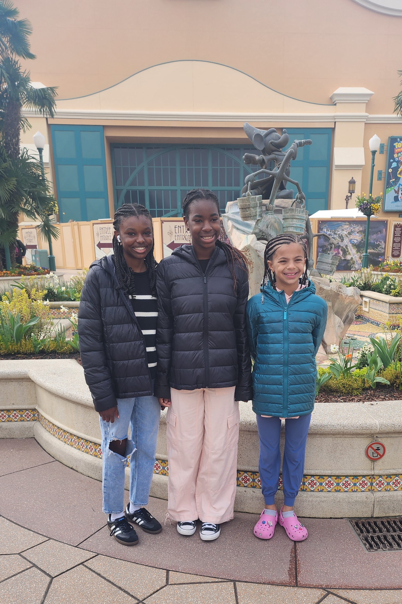
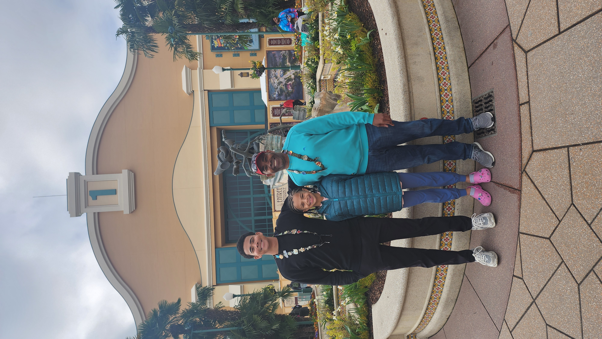
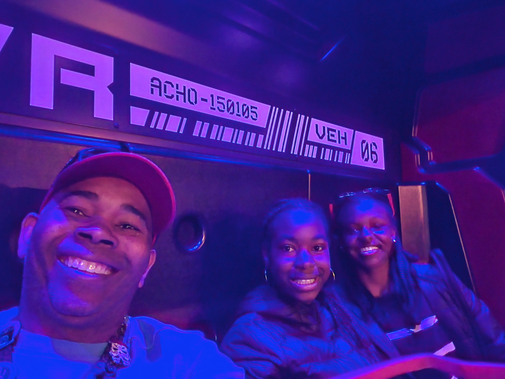
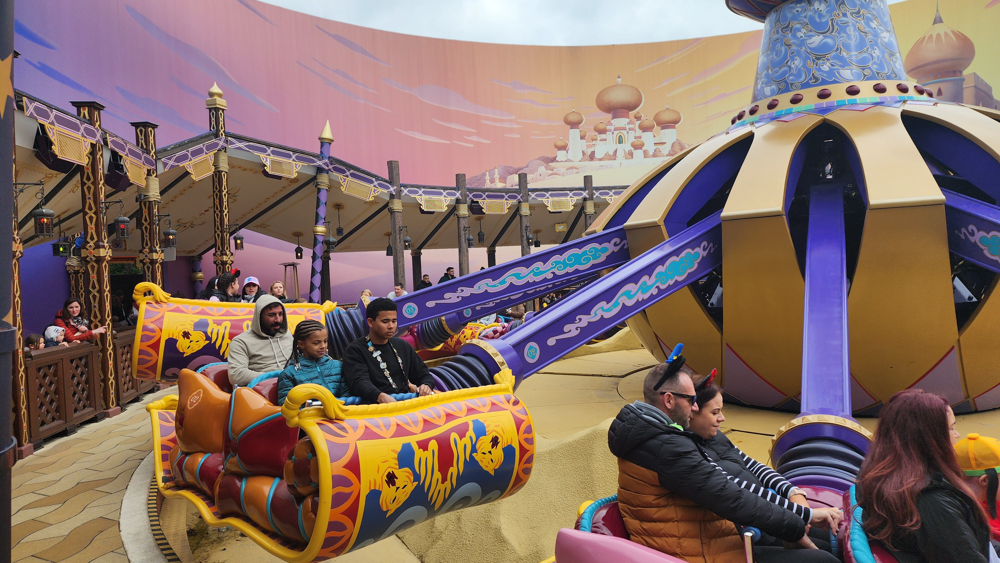
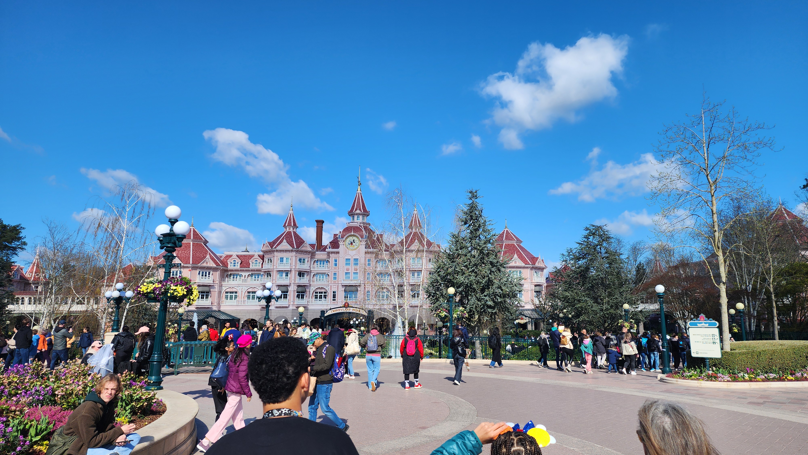
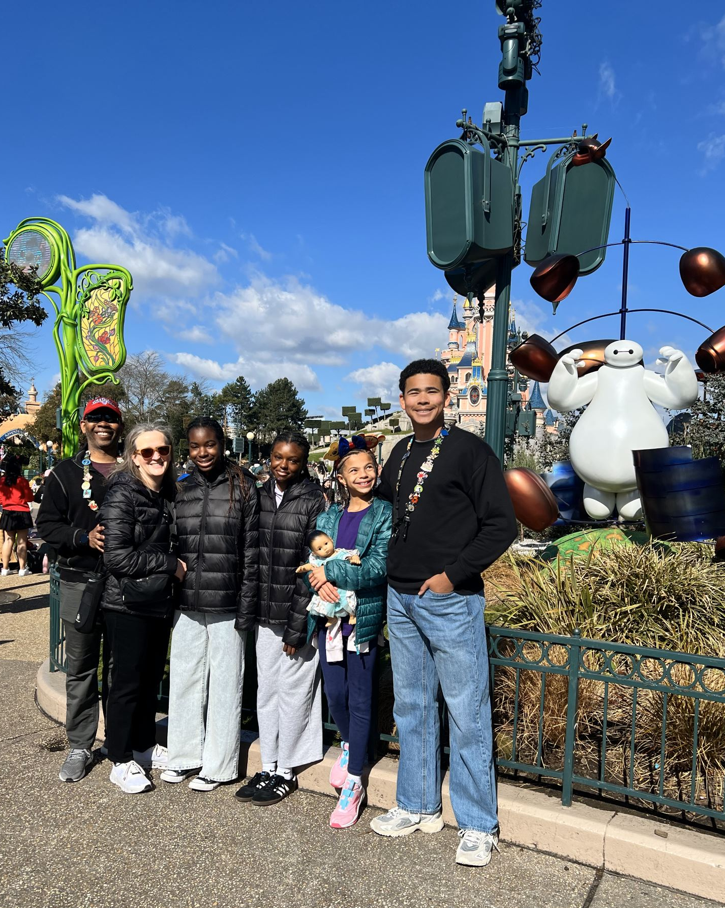

Our Experience at Disneyland Paris
We spent two fun-filled days at Disneyland Paris during our France adventure. It was a magical stop with unique moments compared to the Disney parks in the U.S.
- The rides were different than what we were used to – a fresh twist on familiar classics.
- The park wasn't as crowded as Disneyland or Disney World, which made for a more relaxed visit.
- We were impressed with the food options – some were even healthy! The Mickey waffles with whipped cream were a big hit with the kids.
- There weren’t as many shops or trinket vendors, but that made exploring the park easier.
- The end-of-night castle show was absolutely stunning – easily one of our favorite memories.
- The March weather wasn’t ideal – cold, rainy, and overcast, but it didn’t stop us from having a great time.
- Fewer character meet-and-greet opportunities, but we still caught a few smiles from Mickey and friends.
Overall, it was a great experience, especially with our condo just 1.6km away in Serris. It made walking to the park easy and convenient.
Photo Gallery





